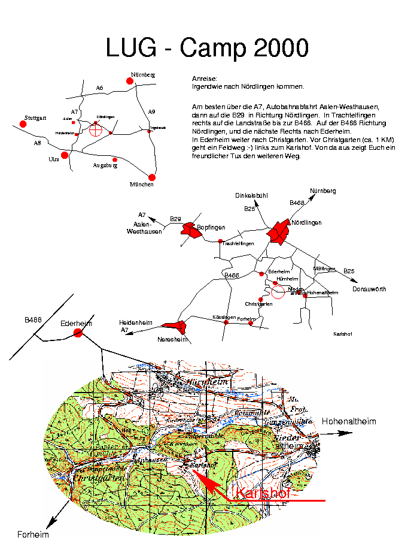

|
|||
 |

|

|
| Home |
|---|
| Wir über uns |
| Kontakte |
| Organisatoren |
| Aktuelles |
| News |
| Webcam |
| Bilder |
| Angebote |
| Was |
| Wo |
| Mailinglisten |
| Anmeldung |
 |
 |
| Wo findet das LUG-Camp statt? |
|---|
|
Wegbeschreibung als GIF
 Wegbeschreibung als PostScript Datei
Die Karte gibt's auch noch als gezippte Postscript-Version (65 kB): karlshof.ps.gz Letzte Änderung: 11.04.2000, joerg |